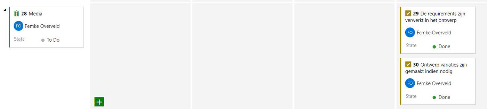

Leerdoel 3
Je realiseert een interactief mediaproduct door hardware en software te combineren, op basis van functionele eisen, verkregen uit user stories.
Realiseren
creëren en valideren van het product en de inhoud ervan door middel van proofs-of-concept
Combineren van hardware en software
gebaseerd op vergelijking van aangereikte alternatieven
Functionele eisen
opgesteld vanuit een gebruikersperspectief
User stories
een duidelijke verklaring en strategie over de doelgroep, business value en haalbaarheid
Voor meer userstories, ga naar Defineerfase van dit project
SPRINT 0
Voor deze sprint hebben wij geen specifieke definitions of done per discipline opgesteld. Wij hebben ons vooral bezig gehouden met het bedenken van een tastbaar idee; wij wilden graag iets nieuws, iets waarmee wij daadwerkelijk een gat in de markt zouden vullen. Naar verwachting was onze zoektocht en het bijhorende beslissingsproces uitdagend en tijdintensief. Om het project in goede banen te leiden is op initiatief van Younes besloten om in Azure DevOps te werken. Hiermee is het mogelijk om de SCRUM-werkwijze aan te houden. Een voorbeeld- screenshot van Sprint 0 is hier te vinden.Verantwoording werkzaamheden Sprint 0
Zoals in de intro van sprint 0 aangegeven zijn er nog geen concrete taken vastgelegd in DevOps. De focus lag volledig op het gezamenlijk opstellen van het onderling leren kennen, een projectplan en het maken van afspraken. Vanaf sprint 1 gaan wij wel alles in DevOps neerleggenOPLEVERING SPRINT 0
Tijdens de les van 12-09-22 is ons idee door Younes gepresenteerd aan onze medestudenten. Verder is ons idee door middel van een uitgewerkt “Businessmodel canvas” gepresenteerd aan een gastspreker (het Eindhovense bedrijf Ratho).KEURING SPRINT 0
In mondeling overleg tijdens de les van 05-09-22 hebben wij een voorstel richting de docent gedaan. Met behulp van zijn feedback hebben wij kleine aanpassingen kunnen doen om het bedrijf volledig richting “IT-dienstverlener” te transformeren. Uiteindelijk heeft Martin de volgende feedback gegeven:
SPRINT 1
Aan het einde van sprint 1 presenteren wij aan de klant waarom het een goede keuze was met ons in zee te zijn gegaan. Wij onderbouwen duidelijk dat hij van de samenwerking profiteert. Bovendien heeft de klant de kans om een keuze te maken uit verschillende designs, wordt een eerste opzet van het platform zelf getoond en ons te voorzien van belangrijk feedback voor de volgende sprint(s). Wij laten het “trucker-karakter” van ons product zien.USERSTORIES 1
DE REQUIREMENTS ZIJN VERWERKT IN HET ONTWERP
ONTWERPVARIATIES ZIJN GEMAAKT INDIEN NODIG
Voor het geval dat het ontwerp voor Software niet mogelijk is, zijn er alternatieven beschikbaar.
Deze taak is af zodra:
• Logo is designed
• Opzet website is gemaakt
• Feedback over beide is ingehaald en verwerkt

KEURING SPRINT 1
De volgende aantekeningen zijn gemaakt tijdens de oplevering van Sprint 1. Zij bevatten de feedback van Martin en Arno.Wat de klant wil zien:
• Hoe kun je inloggen?
• Wat is het gebruikersgemak?
• Wat gebeurt er als ik klik op een rit? Wat zie ik dan?
• Hoe kom ik in aanmerking voor de rit? Word ik ingeloot? Moet ik de eerste reageerder zijn? Zo ja, hoeveel tijd heb ik om te beantwoorden?
• Als ik de rit accepteer krijg ik dan aanwijzingen waar ik de vracht op moet halen?
• Wat als ik geaccepteerd heb en het niet haal in de afgesproken tijd?
• Functionele flow (zoals hierboven omschreven in de vorm van vragen)
Het moet aan de pagina te zien zijn welke gedachte erachter zit. De klant wil het gevoel hebben dat de site veilig is. Denk aan inloggen of bijvoorbeeld 2-factor-authenticatie.
Media Specifiek
Martin kan ook als klant betrokken kunnen worden tussendoor. Dan moeten wij dat afspreken. Hij kan niet garanderen dat hij weet wat hij wil als klant zijnde.Voor meer userstories, ga naar Defineerfase van dit project
1. Userstory
Website algemeen
o Ui duidelijke
o Wireframe
o Prototype
2. Userstory
Algemene voorwaarden
Ik wil weten met wie ik zaken doe en ik wat zijn de voorwaarden om de guns te kunnen huren.
o Content moet aangeleverd zijn
o Het bedrijf moet algemene voorwaarden maken
o Deze in net formulier worden getoond aan klant
3. Userstory
Reviews
Als klant zijnde wil ik weten wat andere mensen van de service vinden (reviews)
o UI duidelijk
o Wireframe
o Prototype
o Trustpilot reviews implenteren
4. Userstory
FAQ
Als klant zijnde wil ik weten wat ik allemaal nodig heb om mijn feest tot een succes kan maken. (soort van FAQ)
o Content moet aangeleverd zijn
5. Userstory
Gebruiksaanwijzing
Als klant zijnde wil ik graag snel informatie hebben hoe de guns werken.
o Content moet aangeleverd zijn
o PDF die gemakkelijk te downloaden zijn
6. Userstory
Verzenden of ophalen
Als klant zijnde wil ik weten of ik de guns kan ophalen of dat ze verstuurd kunnen worden.
o Content moet aangeleverd zijn
o Adres tonen van bedrijf
o PostNL gegevens
7. Userstory
Contact
Als klant zijnde wil ik graag snel mogelijk contact kunnen leggen met de verhuurder
o Content moet aangeleverd zijn
o Adres tonen van bedrijf
o KVK-nummer
o Telefoonnummer
o Optioneel Whatsapp